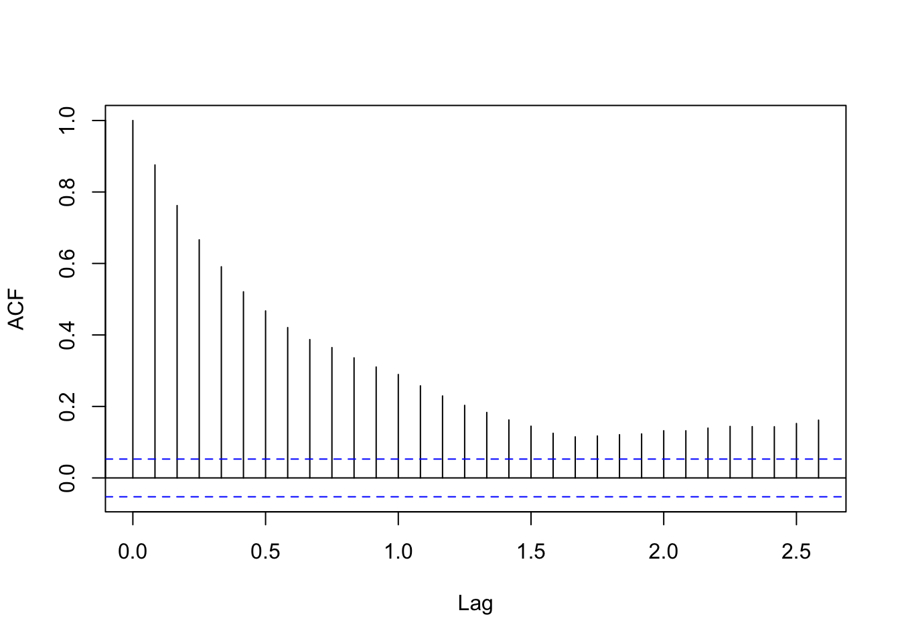

8 论文复刻Climate risks and market efficiency
Hong, Li, and Xu (2019) 这篇文章发表在JoE上，主要讲的是国家气候风险上升，使得国家的粮食价格得到下降，但并没有反映在实际的价格上，存在一定的非完全有效市场。
8.1 Data
数据来自于Harrison Hong的homepage 同样也有do file。
getwd()## [1] "/Users/a182501/rproject/rrp"library(haven)
pdsi <- read.csv("data/honglixu_2019/PDSI_world.csv")PDSI数据也可以从NOAA中获取，不过需要注册，经过审核之后就可以免费下载。
pdsi%>%
select(Date,Peru)%>%
dplyr::filter(Peru!=-999)->pdsi_peru
library(xts)## Loading required package: zoo##
## Attaching package: 'zoo'## The following objects are masked from 'package:base':
##
## as.Date, as.Date.numeric##
## ################################### WARNING ###################################
## # We noticed you have dplyr installed. The dplyr lag() function breaks how #
## # base R's lag() function is supposed to work, which breaks lag(my_xts). #
## # #
## # Calls to lag(my_xts) that you enter or source() into this session won't #
## # work correctly. #
## # #
## # All package code is unaffected because it is protected by the R namespace #
## # mechanism. #
## # #
## # Set `options(xts.warn_dplyr_breaks_lag = FALSE)` to suppress this warning. #
## # #
## # You can use stats::lag() to make sure you're not using dplyr::lag(), or you #
## # can add conflictRules('dplyr', exclude = 'lag') to your .Rprofile to stop #
## # dplyr from breaking base R's lag() function. #
## ################################### WARNING #####################################
## Attaching package: 'xts'## The following objects are masked from 'package:dplyr':
##
## first, lastpdsi_peru_ts <- as.xts(pdsi_peru$Peru,as.Date(pdsi_peru$Date))
plot(pdsi_peru_ts)
pdsi%>%
select(Date,New_Zealand)%>%
dplyr::filter(New_Zealand!=-999)->pdsi_nz
pdsi_nz_ts <- as.xts(pdsi_nz$New_Zealand,as.Date(pdsi_nz$Date))
plot(pdsi_nz_ts)
从数据中，我们可以看出有一定的趋势，尽管可能并不明显。 我们就可以从试图去构建一个含有线性时间固定趋势的模型。
tt <- seq(length(pdsi_nz_ts))
reslm <- lm(c(pdsi_nz_ts) ~ tt); summary(reslm)##
## Call:
## lm(formula = c(pdsi_nz_ts) ~ tt)
##
## Residuals:
## Min 1Q Median 3Q Max
## -6.9739 -1.5492 -0.1941 1.7932 5.8579
##
## Coefficients:
## Estimate Std. Error t value Pr(>|t|)
## (Intercept) -1.2921454 0.1212183 -10.660 < 2e-16 ***
## tt 0.0006777 0.0001521 4.457 8.98e-06 ***
## ---
## Signif. codes: 0 '***' 0.001 '**' 0.01 '*' 0.05 '.' 0.1 ' ' 1
##
## Residual standard error: 2.25 on 1378 degrees of freedom
## Multiple R-squared: 0.01421, Adjusted R-squared: 0.0135
## F-statistic: 19.87 on 1 and 1378 DF, p-value: 8.982e-06plot(tt, pdsi_nz_ts, type="l", xlab="Time", ylab="PDSI in New Zealand", main="Fixed Linear Trend")
abline(reslm, lwd=1.5, col="red")
但固定趋势的模型可能并不精确，比如上述的线性固定趋势模型的R方就较小，拟合性较差。因此在文章中就使用每次的来\(b_{it}\)来构建。
第一个回归方程就是想要先构建一个趋势(\(Trend_{it}\))变量，通过AR(1)模型来实现
文章中是这样说的：

后面的数据都是用1984-2019年的。
end_date <-which(pdsi$Date=="2014/12/1")
begin_date <- which(pdsi$Date=="1984/1/1")
pdsi_1984 <- pdsi[begin_date:end_date,]
dim(pdsi_1984)## [1] 372 45#12*(2014-1984)+12\[\begin{equation} PDSI_{i,t} = a_i + b_{i}t+c_iPDSI_{i,t−1}+\epsilon_{i,t} \tag{1} \label{eq:1} \end{equation}\]
其中的\(b_{i}\)就是希望捕捉的趋势变量，每到一个\(m\)进行一次rolling，可以获得从1900（或者更早）到m时期的\(Trend_{i,m}\)
作者还将滞后2，3期的回归附录放在Dropbox
pdsi%>%
select(Date,Australia)%>%
dplyr::filter(Australia!=-999)->pdsi_au
head(pdsi_au)## Date Australia
## 1 1900/1/1 -3.31573868
## 2 1900/2/1 -4.25730371
## 3 1900/3/1 -0.01355382
## 4 1900/4/1 1.12726247
## 5 1900/5/1 2.32717538
## 6 1900/6/1 2.16344261au_ts <- ts(pdsi_au$Australia,
start=c(1900,1), frequency=12)
acf(au_ts, main="")
ar(au_ts, method="mle")##
## Call:
## ar(x = au_ts, method = "mle")
##
## Coefficients:
## 1
## 0.8759
##
## Order selected 1 sigma^2 estimated as 0.9384对于澳大利亚的数据给出的AR(1)模型。
\(\ref{eq:1}\) 的可以转换为\(Y_t = a + b*t + \epsilon_t\), where \(\epsilon_t = \phi\epsilon_{t-1}+\gamma_t\) a AR(1) process, where \(\epsilon_t\) is a white noise.
数据中有31个国家，也就是要做31次回归。。。太累了。